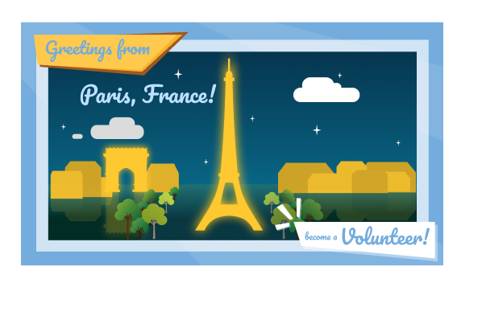
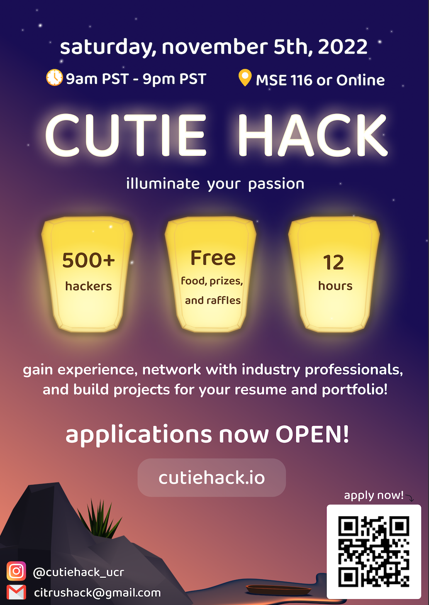
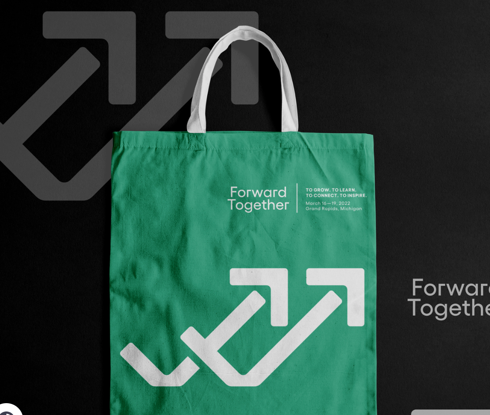
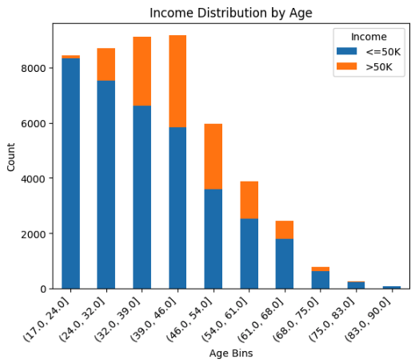
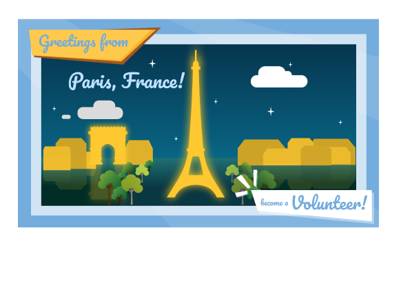
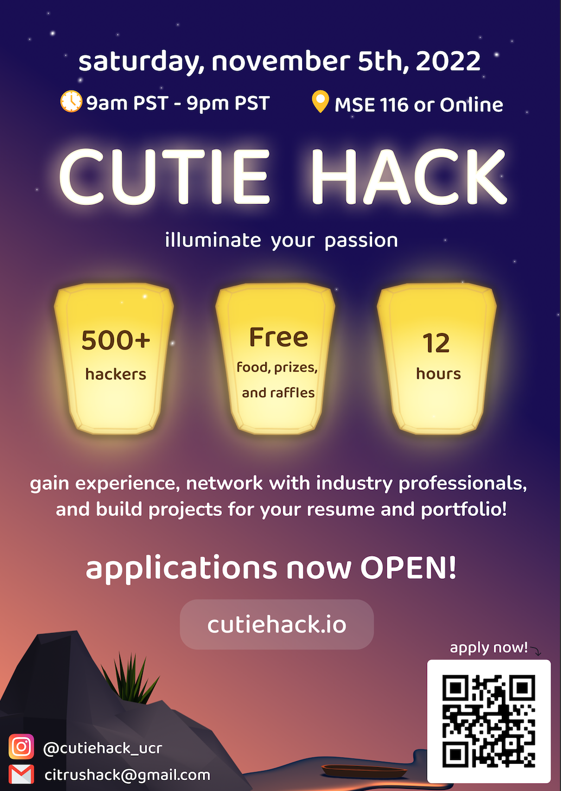
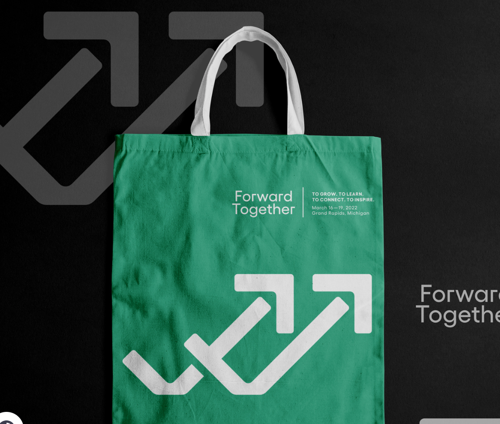
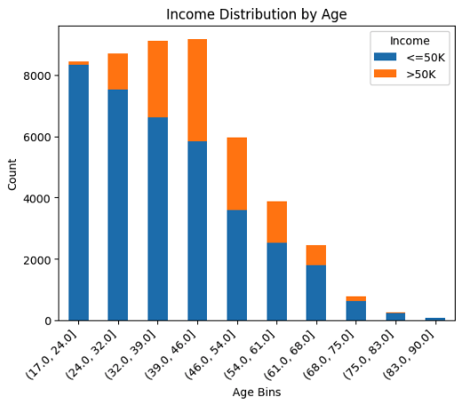

Sarah Kim
Hello! I'm currently in my fourth year at the University of California, Riverside, majoring in Computer Science with a specialization in Business Applications. This blend of technical and business education has uniquely positioned me to bridge the gap between innovative technology solutions and real-world business needs, aligning perfectly with my career aspirations in product management.
Currently, I am working as a Project Manager Analyst at UCR Information Technology Services (ITS), where I am directly involved in managing various technology-driven projects that serve the university's extensive network. This role requires a meticulous approach to planning, executing, and monitoring IT projects, ensuring they meet the defined requirements and are delivered on time. My daily responsibilities include coordinating with multiple stakeholders, managing project timelines, and troubleshooting issues as they arise, which has further honed my organizational and leadership skills. This position has been instrumental in deepening my practical understanding of project management principles and refining my ability to lead diverse teams towards achieving strategic objectives. This experience is proving to be invaluable as I continue to navigate my path toward a career in product management, where these skills are critical.
Last summer, I had the fantastic opportunity to intern at Hyundai Autoever America as a Business Analyst. During my internship, I gained invaluable experience analyzing business processes, identifying areas for improvement, and implementing tech-driven solutions that enhanced operational efficiency. This role not only sharpened my analytical skills but also deepened my understanding of how strategic data utilization can drive business decisions and foster organizational growth.
My journey towards becoming a Product Manager is fueled by a passion for technology and a keen interest in how it can be leveraged to solve complex problems and improve people’s lives. I am particularly drawn to the dynamic nature of the product management role—encompassing market research, strategy development, and cross-functional team leadership. My academic background and professional experiences have equipped me with a solid foundation in these areas, and I am eager to further develop these skills in a hands-on, challenging environment.
Outside of my professional and academic pursuits, I have a variety of interests that keep me energized and balanced. I am an avid player of pickleball and tennis, which not only satisfies my competitive spirit but also helps me stay physically active. Weightlifting is another passion of mine, providing a powerful outlet for stress relief and personal fitness. In the kitchen, I love to experiment with new recipes and cooking techniques, which is a delightful way to express creativity and enjoy the simple pleasures of food.
Additionally, I am a proud dog owner, which brings a lot of joy and companionship into my life. My dog is not just a pet, but a member of the family, offering unconditional love and countless moments of fun.
As I approach the completion of my degree, I am excited about the opportunities that lie ahead. I am particularly interested in roles that will allow me to utilize both my technical skills and business acumen, driving the development of innovative products that meet market needs and enhance consumer experiences. With a clear focus on my career goals and a commitment to continuous learning and improvement, I am eager to contribute to and grow within the field of product management.
Experience
Project Manager Analyst
• Maintained status reports for 20+ projects
• Spearheaded AI note taking project to increase meeting productivity by 50%
• Experience with SNOW, WorkFront, Google Suite
ASUCR Judicial Intern
• Responsible for Law week budget and ordering shirts
• Created multiple new bylaws
• Maintained current bylaws and kept elections fair
Tennis Shop Associate
• Ran sessions to help students learn how to play tennis
• Reviewed and kept inventory of tennis shop apparell
• Created educational content to help promote Tennis bootcamps and private lessons
• Taught 20+ kids in group lessons each season
Education
UC Riverside
Portfolio






© Sarah Kim
 

